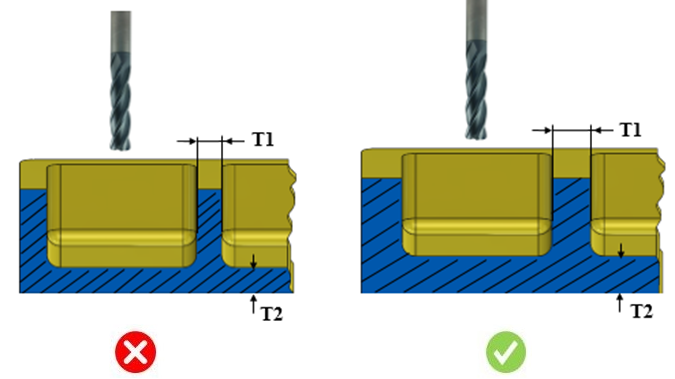

ポケットの底面および側面からの最小肉厚は、ユーザーが指定した値以上でなければなりません。
航空宇宙用構造部品の加工では、薄肉のリブ、スロット、フランジ部が含まれます。これらの薄肉部は、必要な強度を満たし、重量制約を達成するための設計上の配慮によって作られます。このような部品は、最終形状に近い形で鍛造または鋳造され、その後、エンドミル加工によって仕上げられます。加工中には切削力によって薄肉部がたわみ、その結果、寸法誤差が発生し、完成品が設計仕様から外れてしまう可能性があります。本ルールは、オーバーカットの問題を回避するために、ポケット周囲に十分な材料が確保されているかどうかをチェックします。アルミニウムとチタンは、航空宇宙産業で最も頻繁に使用される材料です。アルミニウムは降伏応力が低く、優れた表面仕上げ性と、チタン合金よりも良好な被削性を持っています。一方、チタンは重量強度比に優れているため、航空宇宙産業で最も人気のある材料であり、優れた耐食性も備えています。
DFMPro は、材料に基づいて最小肉厚パラメータを設定できる柔軟性を提供します。

ここで、
T1 = ポケット／スロット側面の最小肉厚
T2 = ポケット／スロット底面の最小肉厚